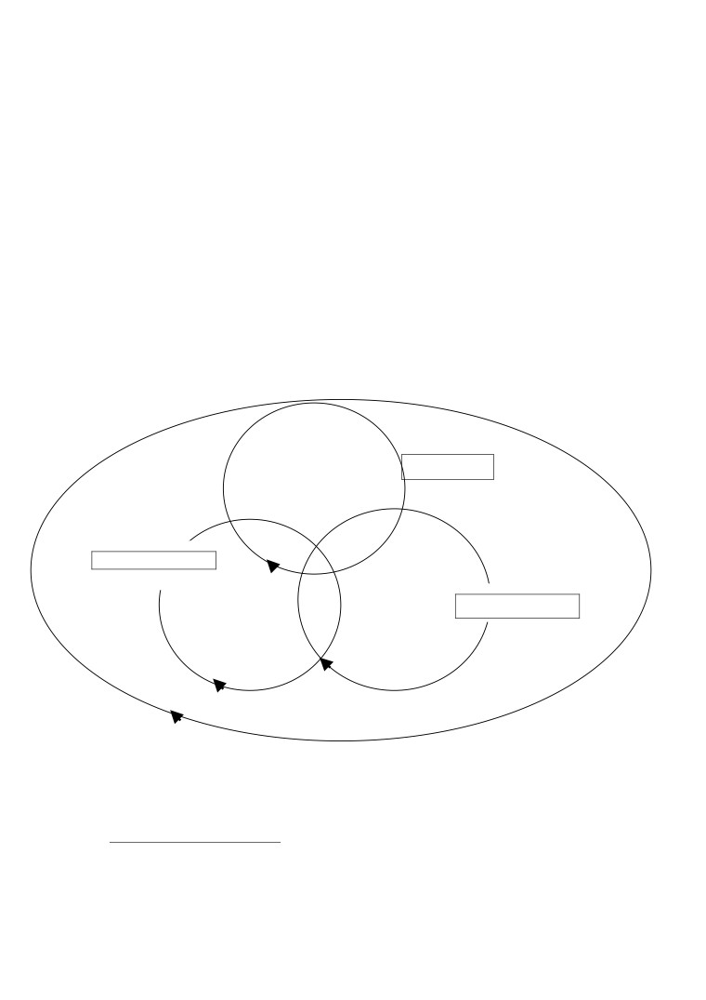
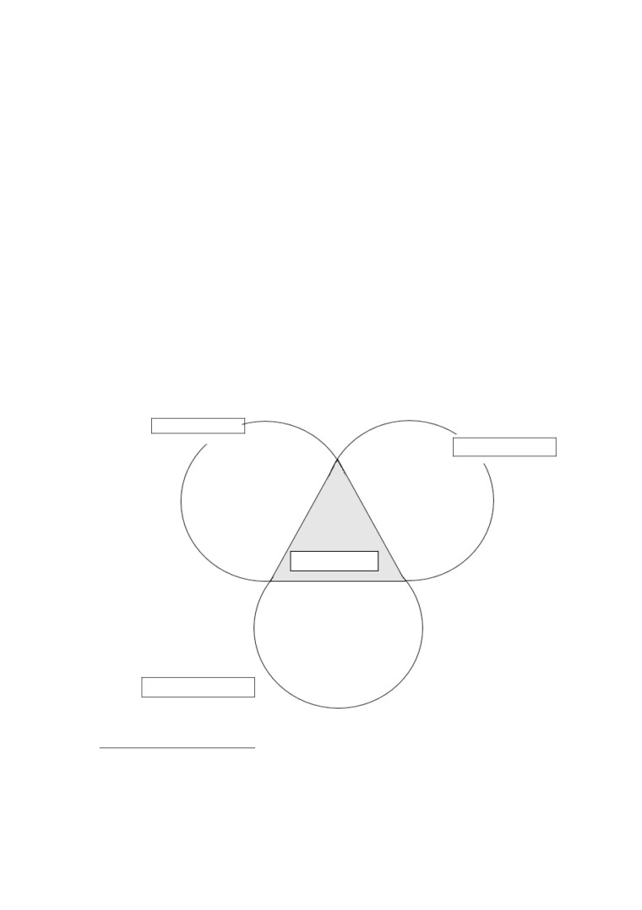

L’industrie du jeu vidéo en ligne :
construction et déconstruction d’un loisir culturel
Vincent Berry
Université Paris 13 - EXPERICE, France
L’objet de la présente communication n’est pas directement une analyse des mutations
des industries des loisirs numériques - industrie trop jeune encore pour isoler ou repérer des
évolutions ou des ruptures spécifiques - mais de la structuration de ce champ culturel et de
son évolution la plus récente : les jeux vidéo en ligne et les mondes virtuels. Il s’agit non
seulement de retracer les grandes étapes de ce secteur mais aussi d’en montrer les principaux
acteurs sociaux et économiques qui structurent ces loisirs : la place du marketing, des
éditeurs, de la presse et les industries technologiques qui soutiennent ces pratiques. Il s’agit
dans un deuxième temps d’analyser à la fois les modes de production et de consommation de
ces produits, et d’en révéler les processus et les effets en terme de réception et de construction
culturelle. En effet, la rencontre entre l’industrie des jeux vidéo et Internet fait émerger selon
nous des nouveaux modes de consommation, de production et d’appropriation de produits
culturels. La place qu’occupent les communautés de joueurs sur Internet est essentielle et
déterminante : elles sont présentes à différents niveaux, aussi bien dans la conception des
produits, la publicité que le développement. Internet est ainsi devenu un terrain de jeu, un
espace de création, de consommation, et de ressources pour le marketing (mais aussi de
distribution par la mise en place de plate-forme de téléchargement). Tous les acteurs du
marché sont ainsi centralisés, partageant et habitant le même espace, réduisant de fait les
différentes - et traditionnelles - médiations entre producteur et consommateur. Apparaît ainsi
non pas une nouvelle culture mais des modes de consommation de produits culturels ludiques
tout à fait singuliers pris dans une logique de co-construction collective voire de coopération
entre des utilisateurs - souvent experts - et des éditeurs de logiciels. Ces relations entre les
divers acteurs sont tout autant génératrices de création que de tension et de
méfiance réciproque : les producteurs ont peur du piratage, du détournement de leur jeu,
d’usages clandestins tandis que du côté des consommateurs peut apparaître une sorte
défiance, de sentiment de récupération ou d’instrumentalisation de leur pratiques.
Ainsi, pour comprendre les rapports qui s’établissent entre émetteurs et récepteurs, nous
proposons, à partir des analyses et des modèles développés par Stephen Kline dans Digital
Play (2003) et de nos propres travaux sur l’univers des jeux en ligne (Berry, Brougère, 2002),
de focaliser notre attention sur les industries des jeux vidéo dans l’idée :
- de retracer brièvement les étapes de ce secteur et de d’analyser l’impact du réseau
Internet sur ces industries
- d’analyser l’appropriation par les utilisateurs et les consommateurs de ces produits
culturels, les types d’organisations sociales qui émergent de ces regroupements
(les
Colloque international « Mutations des industries de la culture, de l’information et de la communication » Septembre 2006
1
communautés virtuelles) et le type de relation et de « négociation » qu’ils entretiennent avec
les éditeurs ;
- d’analyser les
« tensions » entre les utilisateurs et les éditeurs. D’un côté, nous
observons des communautés de joueurs (et de consommateurs) qui « s’accaparent » des
produits culturels. De l’autre, des éditeurs, des concepteurs et des industries qui utilisent à la
fois ces communautés et la pratique de ces communautés comme ressource pour leur produit,
mais qui doivent dans le même temps ne pas être perçus comme
« récupérant » les
productions communautaires. Les éditeurs de jeux vidéo en ligne sont dans une double
contrainte : mettre à disposition et favoriser des espaces de prolongement de leur produit,
maîtriser, soutenir et cadrer les productions des internautes tout en laissant une certaine
latitude et « auto-gestion » aux utilisateurs.
- d’analyser la façon dont ces communautés impactent les offres.
Apparition et structuration d’un champ culturel : l’industrie du jeu vidéo
Les années 50-60 : la préhistoire du jeu vidéo
Dans les années 60 apparaissent les premières “ formes de jeux vidéo ”. Ce sont en
grande majorité des applications électroniques ou informatiques, militaires ou
universitaires, détournées par des étudiants, des hackers, terme aujourd’hui à connotation
délinquante, mais qui a longtemps désigné un ensemble de pratiques étudiantes consistant à
détourner des programmes universitaires ou militaires et à les transformer en d’autres
applications, ludiques le plus souvent (Kline, 2003, 86). Les laboratoires, le MIT notamment,
encourageaient ces pratiques et soutenaient ces usages clandestins voyant là des formes tout à
fait adaptées d’innovation, de création et de recherche.
Les années 70-85 : la naissance d’un marché et “l’ère Atari”
Créée en 1972 par Nolan Bushnell, l’un de ces anciens hackers, la société Atari produit le
premier jeu vidéo à succès, Pong, sous la forme de bornes d’arcade distribuées dans les bars
américains. Sur la base de cette considérable réussite, Atari s’agrandira très vite pour
développer des versions domestiques de Pong (les “ Home Pong ”). La société se lance ainsi
dans la fabrication des consoles de salon et de jeux d’arcade. Les processeurs sont encore
chers à produire, et le développement de ces machines également. Un marché apparaît
rapidement et se divise entre :
- Fabriquant de plate-forme de jeu (hardware).
-
Editeurs de jeux (software) qui développent les logiciels.
-
Studio de développement et créateurs de jeux qui développent des jeux sur les
machines existantes
Une presse peu spécialisée d’abord (jeu et stratégie en France) puis qui se spécialise (Tilt
en 1982)
La plupart des sociétés comme Atari sont à la fois éditeur de logiciel et fabricant de plate-
forme. Dans ce marché naissant, la production, la vente et la distribution sont essentiellement
assurées par des petites sociétés, issues “ d’aventures solitaires ”. A la fin des années 70,
Colloque international « Mutations des industries de la culture, de l’information et de la communication » Septembre 2006
2
quelques grandes sociétés de l’industrie culturelle s’intéressent au jeu vidéo, attirées par le
considérable chiffre d’affaire d’Atari1.
Au début des années 80 une première crise du jeu vidéo se dessine et le marché
américain s’effondre. Plusieurs explications peuvent être convoquées, toutes liées au caractère
nouveau et inconnu de ce marché :
- Une faible expérience “ managériale ” des entreprises du secteur.
- Un marché mal anticipé et inconnu.
- Une baisse de régime dans l’innovation
- Un mauvais ajustement de la qualité et la quantité des jeux produits.
1985-1990 : le monopole de Nintendo
C’est la société japonaise Nintendo qui relancera le marché du jeu vidéo au milieu des
années 80. Le succès de Nintendo est entre autres le fruit d’une stratégie très rationnelle dans
la gestion et l’analyse de ce marché. Elle met en place une politique économique et éditoriale
très précise dans la façon de gérer les jeux développés sur leur plate-forme et va imposer ainsi
de nouvelles « règles du jeu »:
- vendre une machine innovante à bas prix, voire à perte, pour ouvrir le marché au plus
grand nombre de consommateurs et retirer les bénéfices sur la vente des logiciels.
-
verrouiller technologiquement et juridiquement leurs consoles : personne ne peut
développer de jeu sur cette console sans l’accord de Nintendo (mise en place de licence et de
copyright).
-
par un développement soutenu de logiciel et un contrôle rigoureux de la quantité et de
la qualité des produits mis sur le marché
-
par un marketing sophistiqué : étude et recherche sur les goûts du public, test en amont
des produits, création d’une marque soutenue par des icônes de type Mario, publicité à la
télévision, mise en place de journaux “ Nintendo ”, d’une « presse officielle », de services
téléphoniques, de produits dérivés.
90-95 : Sega Versus Nintendo
Pendant 5 ans, Nintendo est le leader du marché. Au début des années 90, Sega vient
contester ce quasi-monopole à l’aide d’une technologie plus rapide et de jeux moins
“ enfantins ”. Pour rentrer rapidement sur le marché, Sega vend à très bras prix sa machine, au
prix de celle de leur concurrent techniquement obsolète. Les difficultés sont grandes pour
Sega et le succès ne viendra pas de suite. Mais l’arrivée de cette société sur le marché va
modifier les “ règles du jeu ” de cette industrie par :
-
l’importance de l’innovation technologique : Sega met en vente une console
nouvelle génération deux fois plus performante et au même prix que celle de son
concurrent
-
Une extension du marché vers les adolescents. Alors que Nintendo ciblait les 8-14
ans, Sega s’adresse aux 15-18.
1 Warner rachète Atari en 1976, et 4 ans plus tard, Atari représente 30% du chiffre d’affaire de Warner
(Kline, 2003, 97)
Colloque international « Mutations des industries de la culture, de l’information et de la communication » Septembre 2006
3
-
Un marketing plus agressif : slogan du type “ Sega c’est plus fort que toi ”, choix
d’espaces publicitaires différents
(MTV par exemple). Utilisation de codes
“ ados ”, “ cool ”, avec un personnage emblématique plus “ insolent ”: Sonic le
hérisson bleu.
-
Une culture des jeux vidéo moins enfantine : couleurs vives, animation et vitesse
des images plus rapides et personnages plus “ humanisés ”, possibilité de jouer
« les méchants », ou des « anti-héros ».
Sega va ainsi mobiliser et modifier les trois circuits du jeu vidéo: le circuit technologique
en proposant une console plus performante, le circuit culturel en produisant des jeux aux
codes et aux références moins enfantines, et le circuit marketing en usant de messages
publicitaires plus « agressifs » dans des media plus ciblés.
1995-2000, une guerre étendue : Sony et Microsoft
Au milieu des années 90, deux leaders dans l’industrie des TIC entrent en course. En
1995, Sony lance une console nouvelle génération : la Playstation. L’empire industriel et
culturel que représente Sony à l’époque le met d’une certaine façon à l’abri des effets
mortifères de l’industrie du jeu vidéo. Sony a en effet une dimension internationale, des
marchés et des réseaux de distribution déjà établis un peu partout dans le monde. La société
connaît les logiques économiques du jeu vidéo, enseignement porté par la guerre Nintendo -
Sega et va ainsi s’inspirer des stratégies marketing de Sega dans la mise en place d’une
publicité plus agressive encore visant également les adolescents, mais franchissant un
nouveau seuil : les jeunes adultes (20-24 ans). La guerre entre Sony et Nintendo ne se fait pas
seulement dans le circuit du marketing mais également dans le circuit des technologies. En
effet, Nintendo fait le choix de garder un système de cartouche de jeu tandis que Sony utilise
le système de cédérom. Les cartouches de jeu permettent des jeux plus rapides que sur
cédérom, mais la production de cartouche est plus chère et plus lente tandis que le cédérom
permet des productions très rapides et moins chères.
Microsoft s’intéresse depuis longtemps au marché du jeu, d’abord en optimisant ses
systèmes d’exploitation présents sur plus de 90% des PC pour assurer la compatibilité des
ordinateurs avec les jeux développés, puis en éditant des jeux vidéo. En 2000 Sega se retire de
la compétition des consoles de salon et se spécialise dans le domaine de l’édition de logiciel,
de la fabrication de jeux “ arcade ” et de parcs de loisirs numériques, laissant la place à
Microsoft dernier venu sur le marché de la console, avec la XBOX.
Structuration d’un champ :
Au travers de cette histoire2 socio-économique du jeu vidéo, un champ s’est structuré que
l’on peut comprendre en terme de « circuits » : culturel, technologique et du marketing
(Kline, 2003)
2 Histoire très rapidement évoquée ici qui mérite d’être analysée plus en détail, mais nous renvoyons à
différents travaux sur ces industries et à l étude dont s’est construit ce champ économique : Kline (2003), Poole
(2000), Le Diberder (1998), Burnham (2001)
Colloque international « Mutations des industries de la culture, de l’information et de la communication » Septembre 2006
4
Le circuit culturel
L’industrie du jeu vidéo s’inscrit aujourd’hui dans cet ensemble économique très large
que l’on nomme le secteur culturel3. Dès les années 80 les game-designers revendiquent leurs
créations comme relevant de productions culturelles (Crawford, 1984). Mais cette culture du
jeu vidéo s’oriente très rapidement au cours de son histoire autour d’univers culturels précis :
culture militaire, culture de l’heroic fantasy issues de l’œuvre de l’écrivain Tolkien et science
fiction. Le circuit culturel regroupe non seulement les producteurs, les concepteurs et les
joueurs mais également toutes les pratiques sociales périphériques à cette activité : presse,
sites Internet, producteurs indépendants, studio de développement amateurs, etc.
Le circuit technologique
Il concerne les
“ artefacts numériques ” : ordinateurs, consoles, télécommunications,
logiciels, (téléphones aujourd’hui) qui constituent les infrastructures dont les industries du jeu
vidéo dépendent. Il travaille aux performances des machines, et dynamise le marché. Il
constitue l’infrastructure dont dépend essentiellement le circuit culturel. Il se caractérise par
des cycles très courts : Les consoles dites “ nouvelles génération ” apparaissent tous les 4 ans.
Les ordinateurs semblent répondre quant à eux à la loi de Moore : tous les 18 mois, les
machines doublent leur performance. Cette rapidité du circuit technologique est un élément
essentiel du marché. Et les rapports de forces entre les compagnies sont souvent bouleversés
par l’innovation de nouveaux concurrents : les consoles dites “ nouvelles générations ”. Mais
cette innovation est complexe à gérer. Il faut certes innover mais l’innovation seule, sans le
relais du circuit marketing pour la promouvoir, ni celui de la culture pour produire des jeux en
quantité et en qualité, ne suffit pas. Lancées trop vite et en trop petite quantité sur le marché et
sans le soutien du marketing, certaines consoles (échecs connus par Sega ou par la société
3DO) pourtant innovantes n’ont eu que très peu de succès.
Depuis l’arrivée de Nintendo sur ce marché, les fabricants de consoles utilisent la
stratégie “ du rasoir et de la lame de rasoir ” (Kline, 2003) : ils vendent leurs machines à très
bas prix attendant de les rentabiliser plus tard par la vente de périphériques et de jeux
développés par eux-mêmes ou par les droits que leur achètent les éditeurs de jeux en vue
d’obtenir l’autorisation de programmer des jeux sur leur machines. Les consoles de jeux sont
en effet “ verrouillées ” technologiquement et juridiquement. Aucun éditeur du circuit culturel
ne peut développer d’application sur une console sans payer de droit au fabricant de la
console.
3 Il y a actuellement un débat politique, juridique et économique (essentiellement Français et européen) sur
la reconnaissance de l’industrie du jeu vidéo comme « industrie culturelle » Depuis 1995, la France demande à
Bruxelles une reconnaissance de cette industrie comme telle pour lui faire bénéficier ainsi de crédit d’impôts et
de mécanismes de soutien comparables à d’autres industries culturelles, telles que celles du livre ou du disque.
Toutefois, si l’on suit les récentes déclarations du ministre de la culture
critères issus d’autres institutions (OCDE ou l’UNESCO par exemple) cette industrie répond aux critères qui
définissent une industrie culturelle. Elle est d’ailleurs reconnue comme telle dans d’autres pays (Canada et Etats-
Unis notamment). Il ne s’agit pas ici de participer au débat mais de considérer cette notion d’industrie culturelle
dans un sens plus large, dans l’idée que tout joueur de jeu vidéo s’immerge nécessairement dans un flot de
“ significations ” (Kline, 2003), dans une culture au sens des cultural studies et dans une nouvelle forme de
narration (Manovitch, 2001).
Colloque international « Mutations des industries de la culture, de l’information et de la communication » Septembre 2006
5

Si l’architecture matérielle d’un PC semble quant à elle plus ouverte, Microsoft a
également mis en place des dispositifs de logiciels à “ acheter ” ou à utiliser pour garantir la
compatibilité entre les systèmes d’exploitation Windows et le jeu développé.
Le circuit marketing : Il comprend la recherche, la publicité, la mesure des ventes et des
modes de consommations, les stratégies de mise en marché des produits et toutes les activités
vitales pour cette industrie (notamment toute une presse dite « officielle », qui relève plus
d’un catalogue déguisé en magasine que d’un journal critique fait par des spécialistes). L’un
des objectifs du circuit marketing est de “ créer des marchés ”. Son objectif premier est de
permettre aux compagnies de faire plus de profit, de suivre les évolutions rapides des
technologies, et le caractère changeant des goûts et de la culture des joueurs. Le marketing
occupe ainsi une place essentielle au carrefour des ces trois circuits. Dans l’économie actuelle,
la difficulté pour les entreprises est de passer d’un marché de “ niche ” à celui d’un marché de
masse, tout en gardant un ensemble de significations propres à la marque. Il s’agit en effet de
vendre au plus grand nombre tout en entretenant le sentiment aux consommateurs qu’il s’agit
d’une communauté spécifique et réduite (Fichez, Noyer, 2001, 107).
Le champ vidéo-ludique : le modèle des trois circuits (Kline, 2003)4
Fabriquant de hardware
(consoles, ordinateurs,
Technologie
téléphones, processeurs …)
Fabriquant de middleware
Marketing
-designers
studio de
- Distributeurs
développements,
- publicité
Culturel
-éditeurs
-presse officielle
-joueurs
- recherche
- presse
« indépendante »
télévision
4 Nous reprenons ainsi pour partie de modèle proposé par Stephen Kline (2002) mais le modifiant en
introduisant d’autres acteurs dans chacun des circuits .
Colloque international « Mutations des industries de la culture, de l’information et de la communication » Septembre 2006
6
Le jeu vidéo se situe ainsi à l’intersection de ces trois circuits, et suppose pour être
compris de saisir la dynamique des trois sphères qui constitue cette industrie : la technologie,
le marketing et la culture. Ces trois circuits doivent être considérés comme interdépendants.
L’apparition du jeu en ligne
A l’instar du jeu vidéo, le jeu en ligne trouve ses origines dans des pratiques informelles,
des pratiques de hackers, liées pour partie au développement d’Internet et à de nouveaux types
de loisirs et de culture anglo-saxons : les jeux de rôle, l’heroic fantasy et la science fiction.
Dans les années 80 apparaissent en effet avec l’Arpanet, ancêtre du réseau mondial, des
activités ludiques « informelles », les MUD par exemple, qui sont à l’origine des adaptations
textuelles de jeu de rôles
(Donjons et Dragons) sous forme de fenêtre de tchat, ou
d’environnement textuel permettant des regroupements de joueurs autour et dans un seul et
même jeu.
Les premiers jeux en ligne commerciaux
Les premiers jeux en ligne commerciaux apparaîtront pendant la guerre entre Nintendo et
Sega (90-95), et donneront une avance à la micro-informatique qui se développe et commence
à rivaliser technologiquement et culturellement avec les consoles (arrivée des processeurs
Intel et développement des ordinateurs optimisés pour le jeu). Avec Internet, l’ordinateur
devient une plate-forme de jeu unique car elle permet le jeu on-line. Un jeu va
particulièrement marquer l’arrivée de l’ordinateur dans l’industrie du jeu vidéo : Doom. Non
seulement il dépasse les ventes des jeux vidéo consoles de l’époque mais laissera une
empreinte indélébile dans cette industrie par :
-
La (re)introduction d’un univers militaire très violent.
-
L’utilisation de la technologie “ 3D ” qui offre un nouvelle façon de s’immerger dans
le jeu vidéo.
-
La possibilité de jouer en ligne qui va générer des pratiques compétitives, coopératives
et communautaires sur Internet (émergence des « clans »)
-
Utilisation du réseau Internet comme espace de marketing : images en avant première
sur le site, version de démonstration à télécharger, des nouveaux mondes gratuits à
télécharger
-
Internet comme médiateur culturel : mise à disposition du “ moteur ” du programme.
Les joueurs, ayant acheté le jeu, peuvent le détourner dans la tradition de la pratique
informatique des “ hackers ” pour développer leurs propres environnements.
Dans la continuité de ces jeux en ligne, des projets plus audacieux vont voir le jour :
les MMORPG, des univers ludiques virtuels permanents, des « deuxièmes mondes ». Il ne
s’agit plus seulement d’utiliser Internet comme relais entre des joueurs pour s’affronter, mais
de créer véritablement un univers virtuel partagé. En 1996 est édité Meridian 59, reconnu par
beaucoup comme « le premier jeu » du genre MMORPG. Il s’agit pour le dire vite ici
d’incarner dans un univers permanent un personnage, un avatar, qu’il s’agit de faire évoluer
opérationnellement (personnage plus apte à réussir des tâches), socialement (progression dans
une carrière), économiquement
(un système de capitalisation de bien, de ressources et
d’argent est simulé) et symboliquement
(réputation, puissance et niveau du personnage
Colloque international « Mutations des industries de la culture, de l’information et de la communication » Septembre 2006
7

reconnu par les autres joueurs). A la suite de ce « premier MMORPG » quelques titres
viendront enrichir ce type de pratique chacun apportant une contribution à ce qui est devenu
aujourd’hui un genre : Ultima online en 1997, Everquest en 1990, la 4ème prophétie, Dark Age
of Camelot (2000), Star Wars Galaxies (2003)5, … et plus récemment World of warcraft qui
connaît un véritable succès en Europe, Asie et Amérique du Nord. Jusque là réservé à un
public « de niche », la sortie récente de World of Warcraft semble avoir ouvert ce type de
pratique ludique à un public plus large (ouverture non seulement en terme d’âge avec des
joueurs plus jeunes, mais ouverture également en terme sociologique : les pratiques des
MMORPG concernaient jusque là des jeunes adultes, célibataires, citadins et issus des classes
moyennes6).
L’apparition de ces pratiques sur Internet va transformer cette industrie du jeu ;
Internet créant un espace partagé entre ces trois circuits qui jusque là interagissaient, mais qui
désormais co-habitent. Cette proximité entre les différents circuits crée de nouvelles formes
non pas de culture mais, nous le verrons, de nouvelles formes de consommation et de
productions de biens culturels. Cette consommation et production de biens culturels se
caractérisent ainsi à la fois par une médiation réduite entre joueurs, concepteurs, éditeurs et
« marketeurs » mais également par une collaboration étroite entre les différents circuits et les
différents acteurs.
L’industrie du jeu vidéo en ligne
Technologie
Culture
fabricants de hardware
-designers
(consoles, ordinateurs,
studio de développements,
téléphones, …)
-éditeurs
fabricant de
joueurs
middleware
-Craftware et méta-jeu
fournisseur d’accès
-presse « indépendante »
Internet
télévision
Internet
- Distribution
- Publicité
- presse officielle
- Recherche
Marketing
5 Il s’agirait là également d’analyser ce que chacun des produits a pu apporter à la construction de ce genre.
6 6 ces profils sont issus de nos précédentes enquêtes (DESS, 1999 et DEA, 2005) mais complétées par celle
de Stéphane Héas et Philippe Mora (2003) et de celle Vincent Levasseur (2004).
Colloque international « Mutations des industries de la culture, de l’information et de la communication » Septembre 2006
8
Analyse de ces nouvelles formes de loisirs : entre tension et coopération,
« manipulation » et collaboration
Une médiation réduite et scénarisée : Ultima Online ou la première « class action »
virtuelle
L’un premier grand succès commercial de ces « mondes virtuels » fut Ultima Online
en 1997. Ultima propose d’incarner un personnage dans un univers médiéval fantastique,
Britannia, où il s’agit non seulement de tuer des créatures avec d’autres joueurs pour défendre
le royaume, mais également acheter une maison, avoir un métier, gagner de l’argent, vivre en
communauté, etc. Ce type de jeu est à l’époque assez novateur (même si l’on peut lui trouver
des ancêtres ou des parrains) non seulement dans la nature même de l’activité qu’il propose
mais également dans le modèle économique qu’il met en place. Il implique un coût de
production très élevé (serveurs pour héberger les joueurs, techniciens pour mettre à jour
l’univers et intervenir en cas de
« crash ») et fonctionne sur une logique d’abonnement
(10$/mois) qui permet de rembourser les investissements onéreux du début et de dégager
ensuite des bénéfices. Ultima utilise en amont des joueurs passionnés, les hard gamers, pour
tester son jeu avant une mise sur le marché directe et payante. En trois mois, 100 000 copies
seront vendues. Mais deux types de problèmes apparaissent avec le lancement. D’abord, des
problèmes « sociaux ». En effet, très rapidement le monde de Ultima se voit habité par des
communautés de joueurs spécialisées dans l’agression des autres joueurs, détournant le
caractère coopératif du jeu au profit d’une dimension agonique, d’affrontement : le player
killing. Si la mort d’un personnage dans ce type de jeu n’est jamais définitive, elle fait perdre
au joueur le capital accumulé au fil du temps (armes, argent, objets divers, etc.). Les jeunes
joueurs sont souvent les principales victimes de
« ces tueurs de joueurs » et il devient
extrêmement difficile pour eux de faire progresser leurs avatars. L’univers ludique devient
ainsi très hostile, peu praticable, peu jouable et totalement déséquilibré. Ajoutés à cette
inégalité ludique, propice à détruire le jeu lui-même, des problèmes techniques apparaissent :
le succès du jeu attire un grand nombre de joueurs -supérieur aux prévisions- créant ainsi de
nombreux
« crash » du serveur. Beaucoup de joueurs perdent ainsi régulièrement de
l’expérience acquise au cours de leurs parties précédentes, parfois même des personnages.
Une gronde et un vent de révolte se crée au sein de la communauté de joueurs et certains vont
s’organiser dans le jeu pour manifester leur mécontentement :
« Le seigneur Lord British, personnage joué par Gariott
(le créateur du jeu),
possédait un château au sein du monde virtuel que les joueurs ont envahi. Une fois a
l’intérieur, ils saccagèrent la salle du trône de lord British. Lord British a assisté à la scène
de façon invisible, ayant revêtu une cape d’invisibilité » (Kline, 2003, 162)
La réponse du concepteur se fit « IRL » (in real life) sous la forme d’une « lettre
ouverte de lord british » adressée
« aux citoyens de Britannia » et publiée la presse
spécialisée, expliquant les difficultés techniques de ce type de jeu et rappelant que les lois et
le fair-play ne sont pas respectés par certains joueurs, déclarant enfin que
« comme en
Amérique où des lois ont été faites pour prévenir les monopoles, nous devons nous aussi
augmenter les lois de britannia » (Kline, 2003, 163). Si cette histoire peut paraître à bien des
égards comme anecdotique, elle révèle non seulement une médiation réduite entre producteurs
et consommateurs mais également une lutte qui épouse la forme du jeu et qui annonce selon
nous des modes de consommation de loisir tout à fait originales où les traditionnelles
frontières entre émetteurs et récepteurs de bien culturels vont se déplacer En effet, au fur et à
Colloque international « Mutations des industries de la culture, de l’information et de la communication » Septembre 2006
9
mesure de l’évolution de ces pratiques en ligne vont se développer des forums sur Internet
dédiés aux problèmes du jeu, aux plaintes, aux « bugs », aux conflits entre joueurs et sur
lesquels des solutions sont évaluées parfois instantanément (exclusion d’un joueur qui triche
ou qui ne respecte pas la charte). Vont se développer également ce que l’on peut nommer des
joueurs frontières à la fois joueurs, à la fois animateur/ médiateur qui en échange d’avantages
dans le jeu ou dans les productions à venir, sont chargés de recueillir les problèmes des
joueurs et éventuellement d’intervenir en cas de conflit.
Une collaboration étroite :
Soutien à la conception : les joueurs comme testeurs et designers
L’utilisation de joueurs comme testeurs ou experts est aujourd’hui très fréquente au
moment de la conception d’un jeu vidéo. Ces « hard gamers » ont des connaissances
culturelles et techniques qui peuvent directement servir de correctifs à un jeu, pour éviter les
bugs, tester la compatibilité des différents matériels. Les joueurs de jeu vidéo - et nous
rejoignons ici les analyses communes de James Gee (2003), Raessens (2005) et Turkle
(2005)- développent au cours de leur pratique des compétences de « design » et deviennent
des « déconstructeurs » d’environnement informatique. C’est en effet par une compréhension
précise du jeu, de sa structure, de ses règles, de sa configuration mais aussi de ses
dysfonctionnements et de ses « bugs » que les bons joueurs se distinguent d’autres joueurs.
Les “ hard gamers ” ont ainsi acquis une culture et des connaissances spécifiques : le test en
profondeur, c’est-à-dire chercher partout les failles d’un jeu, dans ce qu’il n’autorise pas ou
apparemment pas, dans ses règles explicites jusque dans sa programmation. Ainsi, certains
joueurs sont invités plus ou moins en amont de la phase de conception à tester les
fonctionnalités du programme et à rapporter les dysfonctionnements (éventuellement ils
proposent des solutions) afin d’assurer la qualité de la version finale. « Cette première étape
instaure un rapport particulier entre concepteurs et joueurs, qui se développe tout au long de
la vie du jeu au travers d’échanges (suggestions, récriminations, etc.) entre les « tenanciers »
de l’univers virtuel et ses habitants
[…] De par sa nature même, c’est-à-dire de par
l’impossibilité d’une gestion absolue de l’ensemble des paramètres qui le font exister, le jeu
en ligne massivement multijoueurs est tout entier pris dans cette dialectique de la malléabilité
plus ou moins ouvertement négociée » (Glassey, Prezioso, 2003)
Soutien au déroulement du jeu : les joueurs comme médiateurs et « plus value ludique ».
Cette utilisation des joueurs comme « relais » et « médiateurs » ne s’arrête pas à la
conception du jeu mais se prolonge dans le déroulement du jeu. Les communautés de joueurs
sont en effet de parfaits indicateurs en temps réel du déroulement de l’activité ludique.
Editeurs et concepteurs disposent ainsi d’une analyse de leur produit au travers des forums
que les joueurs mettent en place, mais également en soutenant les « joueurs frontières », des
animateurs, qui leur permettent d’ajuster, de modifier le jeu et les éventuels
disfonctionnements au gré de « patch », d’extensions et de mises à jours régulières. Cet
espace virtuel devient ainsi un espace partagé non seulement par les créateurs et les joueurs
mais également par le marketing : à l’instar d’un laboratoire, l’environnement ludique
qu’habitent les joueurs leur permet d’obtenir un certains nombre d’information : connexion,
temps de jeu, fréquence, typlogie des pratiques, etc.
Colloque international « Mutations des industries de la culture, de l’information et de la communication » Septembre 2006
10
Autre rôle majeur qu’occupent les communautés de joueurs et les clans : celui de
« transmetteur » de la pratique. Les joueurs en effet ne lisent que très rarement les règles mais
apprennent la plupart du temps en jouant : l’apprentissage du jeu est intégré dans la pratique
même du jeu et les savoirs sont le plus souvent transmis par les communautés de joueurs,
directement dans le jeu ou dans le hors-jeu sur leur site internet. Ces communautés de joueurs
soutiennent ainsi cette pratique culturelle en transmettant aux jeunes joueurs les règles du jeu,
mais aussi l’ensemble des codes, des routines de la culture des jeux vidéo (Berry, Brougère
2002). A l’origine informelles, ces guildes de joueurs sont aujourd’hui soutenues par les
éditeurs qui leur offrent des espaces d’hébergement dans le jeu et dans le hors jeu (sites
Internet, forum, outil de communication, etc.)
Enfin ces communautés constituent une « plus value ludique ». Elles jouent en effet
un rôle essentiel dans le plaisir et l’expérience ludique (Berry, Brougère, 2002)). Certains
profils de joueurs circonscrivent leur plaisir de joueur dans la communauté : gestion du site,
organisation de soirée, role-play, faire semblant, mariage entre joueurs, alliances ou guerre
entre communautés, grades et titres dans la communauté, acquisition d’un capital
symbolique, d’une réputation, etc. Etre membre d’une communauté apparaît souvent comme
un « jeu dans le jeu » (Berry, Brougère, 2002)
Soutien au développement des ces produits : le craftware7 et le méta-jeux
En 1994, ID software met à la disposition des joueurs le moteur informatique de leur
jeu DOOM. Quelques mois plus tard les joueurs développent leurs propres mondes, cartes,
univers, personnages, et les mettent à leur tour à disposition des autres joueurs sur Internet…
Autour des jeux vidéo en ligne s’est développé aujourd’hui du méta-jeu8 (Berry, Brougère,
2002) ou encore ce que Franck Beau appelle du craftware. Ces termes renvoient tous deux à
un processus d’appropriation et de prolongement du jeu dans le hors-jeu par la production
d’artefacts numériques (craftware) ou de pratiques ludiques parallèles à l’activité ludique elle-
même (méta-jeux). Apparaissent ainsi des artistes du « skin », des « faiseurs de monde » pour
reprendre le terme de Laurent Trémel, des artisans du numérique. On peut distinguer trois
types de détournement de jeux (Schleiner) :
-
des modifications ludiques : le transfert d’un jeu vers un autre type de jeu, ou une
modification du programme. L’exemple le plus intéressant -et le plus célèbre- est celui
du jeu « counterstrike », qui fut pendant longtemps l’un des jeux les plus pratiqués sur
Internet et dans les salles de jeu en réseau. C’est à l’origine un internaute qui, sur la
base du programme d’un autre jeu (Half Life), a créé une variante.
-
des modifications artistiques et culturelles: amélioration graphique, créations de
« skins », d’avatars, de textes, de vidéo, etc.
-
des modifications idéologiques : jeux vidéo commandés par l’armée américaine, jeu
vidéo développé par des groupuscules d’extrême droite, …
-
de détournements économiques : une économie souterraine se développe parfois
autour de jeux : vente de personnages aux enchères, ventes d’objets, …
7 Terme de Franck Beau
8 Terme de Garfield
Colloque international « Mutations des industries de la culture, de l’information et de la communication » Septembre 2006
11
Les éditeurs de jeux encouragent et soutiennent le plus souvent certaines de ces pratiques
méta-ludiques. Ces productions de craftware et ce développement du méta-jeu sont ainsi des
éléments essentiels dans le développement et la conception des produits à venir. Elles
renseignent les éditeurs à la fois sur les prolongements possibles de leur jeu, (le circuit
marketing sur le goût des joueurs) mais également sur les limites et les détournements
possibles de l’activité.
Conclusion : une culture interactive et paradoxale
Nous avons essayé de montrer ici la spécificité et l’originalité de cet espace de loisir
dans lequel co-habitent les différents acteurs et les différents circuits. Cette co-habitation
contribue à créer une forme de consommation tout à fait singulière dans l’univers du loisir. La
médiation est en effet plus directe et chaque circuit soutient les autres circuits : les
fournisseurs d’accès soutiennent les éditeurs, les éditeurs soutiennent les communautés de
joueurs, les joueurs soutiennent les éditeurs non seulement en jouant, mais aussi en créant des
communautés et des artefacts numériques. Cette relation étroite entre consommateurs et
producteurs est un processus déjà observé ailleurs, dans d’autres sphères culturelles, ce que
l’on appelle souvent la culture des fans : est-ce que Sherlock Holmes est mort, est ce que
Superman va revivre, Columbo est-il vraiment marié, est ce que J.R. va hériter, est ce que
Hélène est amoureuse, … ? Mais dans ces cas, il s’agit le plus souvent d’un mouvement
univoque : c’est au marketing, aux professionnels de la médiation de « recueillir », prévoir les
fameuses attentes du public, de la « ménagère de moins de 50 ans », des « ados », ... Ici le
media, et la nature du média, engagent à une participation active des consommateurs. Les
jeux vidéo en ligne produisent ainsi pour reprendre le terme de Raessens une culture
participative médiatique (Raessens, 2005). La participation au jeu ne s’arrête pas seulement
au système mis en place, mais la participation peut s’étendre, comme le montrent ces
pratiques de joueurs, à une interaction et une participation très forte dans la construction de
ces univers. Cette co-habitation prend parfois des allures conflictuelles. Mais la nature du
média tend à transformer ces tensions dans les formes d’un affrontement ludique (comme ce
fut le cas pour le jeu Ultima). Apparaît ainsi une forme d’interactivité culturelle qui va au-delà
du système fermé du jeu. Cette médiation réduite entre producteur et récepteur confirme -
voire radicalise - nous semble-t-il les modèles développés de Becker (1999) sur l’art, cette
analyse de l’art et de la production culturelle comme le résultat d’une coopération entre les
artistes, les producteurs et les consommateurs.
Toutefois en parlant de coopération il s’agit de ne pas être naïf ou enthousiaste et
d’évacuer de l’analyses les logiques cachées, les idéologies (Fortin, 2005) et les stratégies
(parfois contestables et douteuses) mises en place pour accrocher les joueurs. Ainsi si ces jeux
vidéo sont des espaces de jeu, de plaisir, de divertissement, ils sont également le lieu de
tension, de luttes et de manipulations réciproques entre les joueurs (les joueurs coopératifs
contre les « tueurs de joueurs »), entre éditeurs et joueurs (triche, respect des règles, économie
parallèle, piratage), entre marketing et joueurs, etc. Les différents circuits se retrouvent ainsi
dans des situations complexes: favoriser et soutenir ces collaborations encourager la
participation sans qu’elle déborde, accrocher les joueurs sans les rendre « accrocs », etc. Aussi
si les grandes compagnies encouragent les développeurs, les éditeurs de jeux vidéo et les
Colloque international « Mutations des industries de la culture, de l’information et de la communication » Septembre 2006
12
jeunes créateurs à s’investir, elles proposent le plus souvent des conditions de travail précaires
Les employés souvent des « joueurs passionnés » sont particulièrement interchangeables
(Kline, 2003).
Les grandes compagnies partent sur des prévisions optimistes du jeu en ligne et
investissent considérablement sur ces technologies de réseau. Cette possibilité de jouer en
ligne reste encore le domaine privilégié des ordinateurs. Mais les consoles et les téléphones
plus récemment encore proposent de plus en plus de jeux en ligne. Dans l’histoire du jeu
vidéo, on a pu observer à partir des années 90 les ordinateurs se transformer en plate-forme de
jeu, en consoles déguisées ; aussi voit-on aujourd’hui le phénomène inverse : les consoles se
transformer en ordinateur. Mais c’est plus largement le marché des nouvelles technologies qui
semble converger vers le même objet : des plate-formes “ multiculturelles ” (téléphones,
ordinateur, consoles, agenda électroniques, …) supportant à la fois jeux, Internet, télévision,
films, musiques, téléphonie …
Bibliographie
BECKER Howard (1999), Propos sur l’art, Paris : L’Harmattan
BERRY Vincent, BROUGERE Gilles (2002), « Play and virtual communities », in Internet, jeu et
socialisation, [actes colloque en ligne], Paris : Groupe des Ecoles des Télécommunication.
BURNHAM Van (2001), Supercade: A visual History of the videogame age, MIT Press:
Cambridge
CRAWFORF Chris (1984), The Art of Computer Game Design, Berkeley : McGraw-Hill.
GEE James (2003), What video games have to teach us about learning and literacy, Palgrave
MacMillan:Neaw-York
HEAS Stéphane, MORA Philippe (2003), « Du joueur de jeux vidéo à l’e-sportif : vers un
professionnalisme florissant de l’élite ? », p.
132-146, in La pratique du jeu vidéo : réalité ou
virtualité ?/ sous la direction de Mélanie Roustan, Paris : l’Harmattan, 224 p., coll. Dossiers Sciences
Humaines et Sociales.
KLINE Stephen, Dyer-Witheford Nick, de Peuter Greig (2003), Digital Play - The interaction of
Technology, Culture, and Marketing, Montreal & Kingston, MC Gill-Queen’s University Press.
LE DIBERDER Alain et Frédéric (1998), l’univers des jeux vidéo, Paris, La Découverte
LEVASSEUR Vincent, « Etude d’une population : les joueurs de Massive Multiplayer Role
Playing Game (MMORPG) » [Enquête d’un étudiant en IUP Miage, dans le cadre de l'enseignement
"Analyse des Données" (Pôle Mathématiques) en ligne], 2004. [Réf. du 2 mai 2004]. Disponible sur :
FORTIN Tony, MORA Philippe, TREMEL Laurent (2005), Les jeux vidéo : pratiques, contenus et
enjeux sociaux, Paris : L’Harmattan
GLASSEY Olivier, PREZIOSO Stéfanie (2003), « La guerre en ligne », p189-202, in La pratique
du jeu vidéo : réalité ou virtualité ?/ sous la direction de Mélanie Roustan, Paris : l’Harmattan, 224 p.,
coll. Dossiers Sciences Humaines et Sociales.
MANOVICH (2001), The language of New Media, Cambridge: Mass
FICHEZ Elisabeth, NOYER Jacques (2001) La construction sociale de l’univers des jeux vidéo,
Edition du Conseil Scientifique de l’Université Charles de Gaulle- Lille 3, CEGES
Colloque international « Mutations des industries de la culture, de l’information et de la communication » Septembre 2006
13
POOLE Steven (2000), Trigger Happy : The Inner Life of Video Games, London : Fourth Estate
RAESSENS Joost (2005), « Computer Games as Participatory Media Culture » in Goldstein
Jeffrey, Raessens Joot, The handbook of Computer Game Studies, MIT Press Cambridge:
Massachussetts London
SCHLEINER Anne Marie (2005), « Game Reconstruction Workshop demolishing and Evolving
PC Games and Gamer Culture » in Goldstein Jeffrey, Raessens Joot, The handbook of Computer
Game Studies, MIT Press Cambridge: Massachussetts London
TURKLE Sherry (2005), « Computer Games as Evocative objects : From Projective Screens to
Relationnal Artifacts » in Goldstein Jeffrey, Raessens Joot, The handbook of Computer Game
Studies, MIT Press Cambridge: Massachussetts London
TREMEL Laurent (2001), Jeux de rôles, jeux vidéo, multimédia : les faiseurs de monde, PUF,
Paris
Colloque international « Mutations des industries de la culture, de l’information et de la communication » Septembre 2006
14